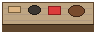
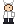
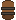
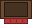
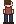

V10 · Travellers Rest 스타일 펍/식당 (시험)
탑다운 + 사이드뷰. 벤치 1개당 4명, 테이블 3개 = 동시 24명. 셰프 트레이 운반 동선 포함. 주방 좌측 / 다이닝홀 중앙·우측 / 입구 우측 상단 / 대기열은 풀바디 사이드뷰.
⭐ 1-2 비스트로
⏱ 02:14
💰 1,240





주방 카운터 (셰프×2)
술통 장식
입구
대기열
(풀바디 사이드뷰)
운반중 셰프
동시 24석
(8×3 테이블)
Travellers Rest 스타일 핵심 요소 (시뮬레이션):
- 탑다운 가구: 윗면 평면 + 짧은 측면 1~3px(table_long.png). 디메트릭 대비 발주 단순.
- 긴 벤치: 1벤치 = 4슬롯, 1테이블 양옆 8명 동시 착석.
- 사이드뷰 캐릭터: 풀바디(다리·하반신 보임). 측면 캐릭터가 벤치 위에 정확히 정합 — 카이로식 회피 트릭 불필요.
- 아래쪽 벤치 손님 미러링:
transform: scaleY(-1)로 같은 스프라이트 재사용.
- 동시 처리량: 24석 = V9(11석) 대비 2배+, 카오스 분위기 강함.
- 운반 중 셰프: 카운터→테이블 동선이 시각적으로 보임 (Travellers Rest의 핵심 동적 연출).
- 벽 장식·술통: 디테일 소품으로 펍 분위기 살림.
V9(카이로) 대비 장점:
- 의자 정합이 자연스러움 (다리 회피 트릭 불필요)
- 가구 발주 단순화 (모든 면이 아닌 윗면+측면만)
- 동시 좌석 수 ↑ (24 vs 11)
- 사이드뷰 캐릭터는 픽셀아트 표준 패턴 → PixelLab/SD 발주 정확도 ↑
V9(카이로) 대비 단점:
- GatheringScene(아이소메트릭)과 시점 어긋남 — 두 씬 톤 불일치
- 외부 풍경(거리·창문) 노출 어려움 (탑다운이라 위에서 봄)
- 벽이 짧은 띠라 공간감/인테리어 분위기 약함 (벽 두께/장식으로 보완 필요)